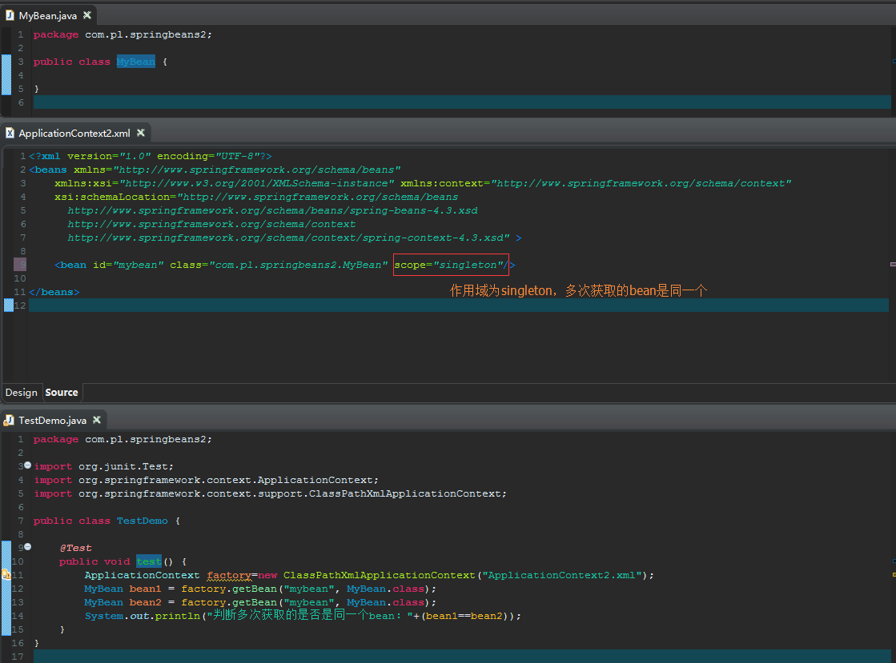
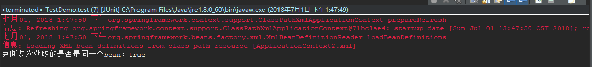
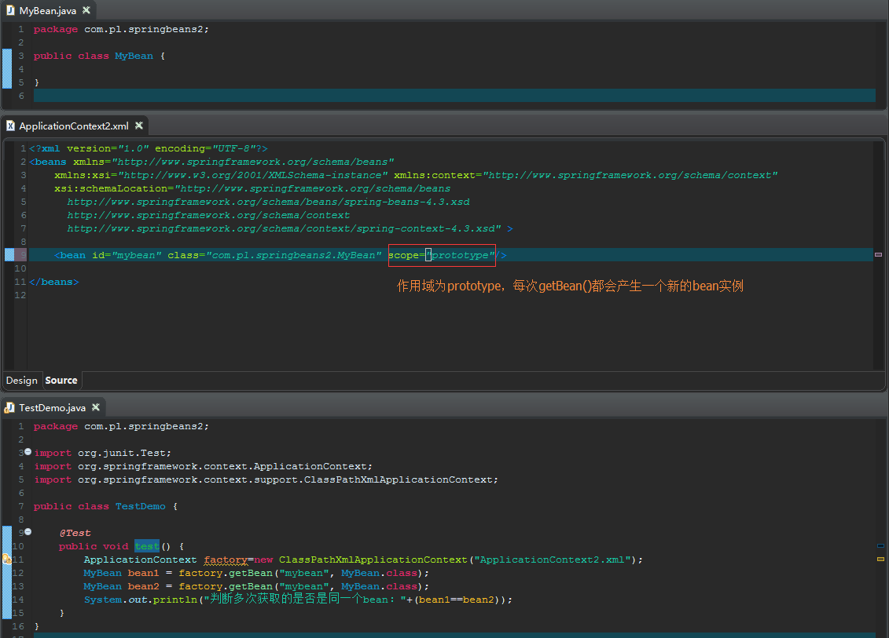
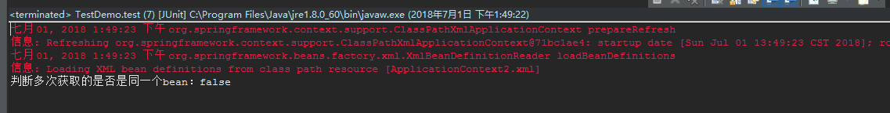
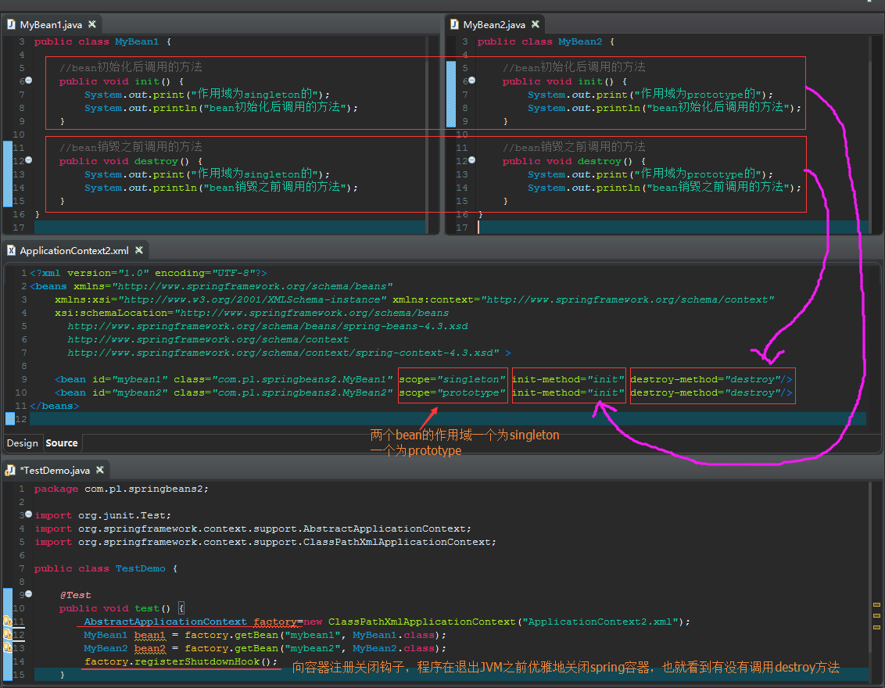
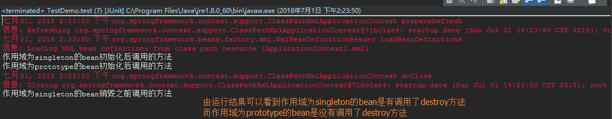
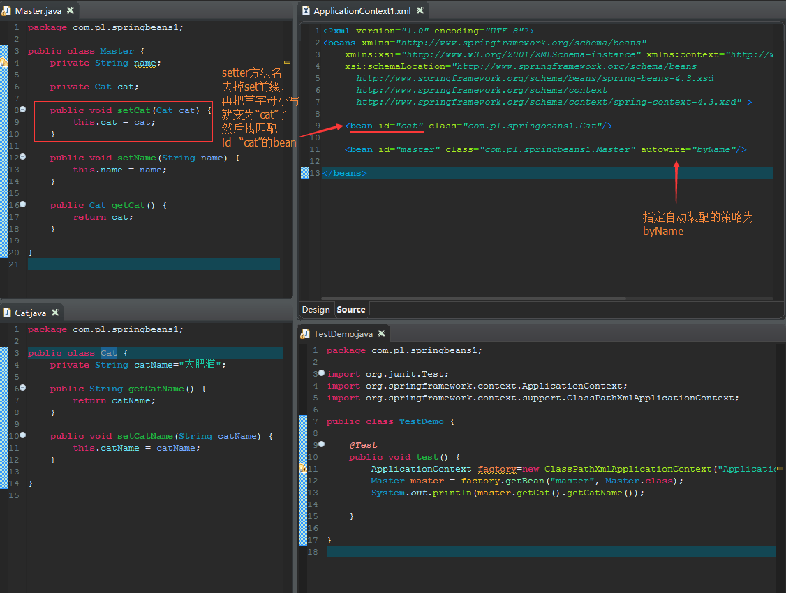
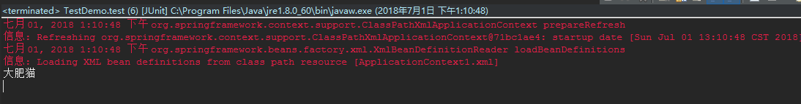
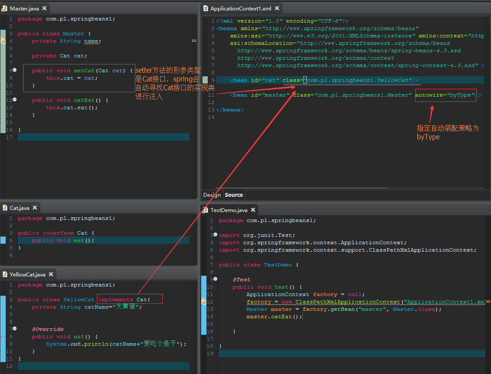
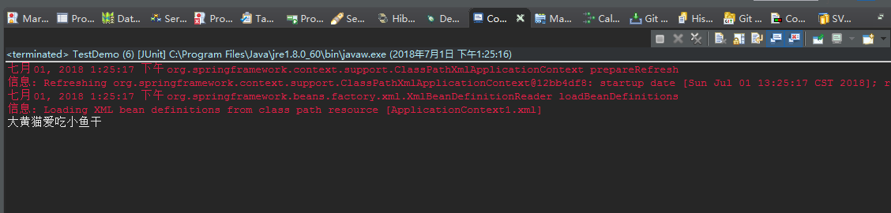

bean的作用域
bean的作用域通过<bean.../>元素的scope属性指定，一共有以下5种作用域：
- singleton：默认值，单例模式，整个IoC容器中只有一个bean的实例
- prototype：多例模式，每次通过getBean()方法获取bean的时候，都会产生一个新的bean实例
- request：对于每一次HTTP请求，都会产生一个新的bean实例，在同一个HTTP请求内，用同一个bean实例
- session：对于每一次HTTP会话，都会产生一个新的bean实例，在同一个HTTP会话内，用同一个bean实例
- global session：
示例如下：
示例一：


示例二：


bean的生命周期
spring可以管理作用域为singletono的bean的生命周期（负责bean的创建和销毁），而对于作用域为prototype的bean，spring只是负责bean的创建，无法管理bean的销毁。


自动装配（不推荐使用）
spring能自动装配bean与bean之间的依赖关系，即无需使用ref显式指定依赖bean，而是由spring容器检查XML配置文件内容，根据某种规则，为调用者bean注入依赖bean。自动装配可以减少配置文件的工作量，但降低了依赖关系的透明性和清晰性，同时非常不利于高层解耦
自动装配可以在<beans.../>元素的default-autowire属性指定，该属性堆配置文件中所有的bean起作用；也可以通过<bean.../>元素的autowire属性指定，该属性只对当前bean起作用。
atuowire、default-autowire属性可以接受以下常用值：
- no：默认值，不适用自动装配，bean依赖必须通过ref元素定义
- byName：根据setter方法的方法名与bean的id进行匹配（先将setter方法名去掉set前缀，并小写首字母，然后找出与其一致的id）
- byType：根据setter方法的参数类型与bean的类型进行匹配
示例如下：
示例一：


示例二：

